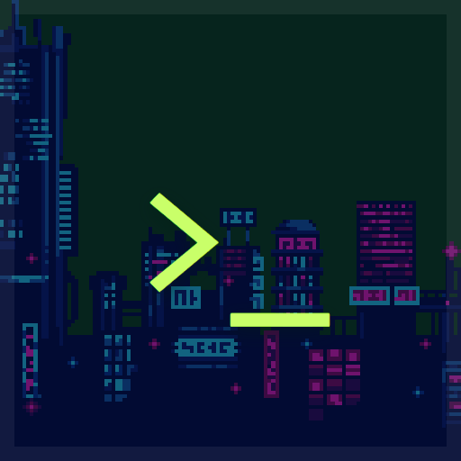

<- all projects

Ghostline
Android
Volume
Live
Find a friend erased from every record by building a crew and solving signal puzzles.
Your friend has vanished from every record in the city, and the only clue is a message on an underground network. Build a crew, untangle fictional signal puzzles and uncover the people behind the silence. Work through 48 authored relay missions with five adult crew members, rotating relays, managing trace, collecting evidence and choosing two tools for each route. Improve your tools, take on remixed side contracts between story missions and revisit branching story endings.